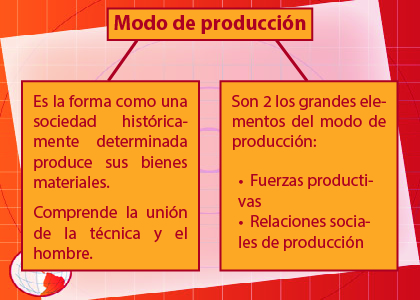
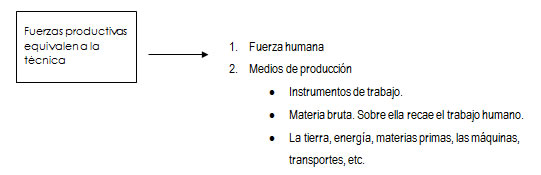
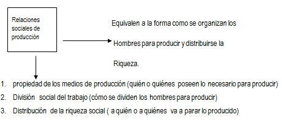

Concepto básico para el materialismo histórico. Es la unión dinámica entre las fuerzas productivas y las relaciones sociales de producción, determinan la forma de producir de una sociedad históricamente determinada; a esto se le llama estructura económica de la sociedad, que forma lo que también se conoce como modo de producción. Al cambiar y desarrollarse las fuerzas productivas tienen que cambiar necesariamente las relaciones sociales de producción ya sea de forma pacífica o revolucionaria.
Las fuerzas productivas están formadas por la fuerza de trabajo entendida como la aptitud, la capacidad, la habilidad y la fuerza física del hombre, aunada a los medios de producción como son los instrumentos de trabajo y los objetos de trabajo.
Las relaciones sociales de producción son las que se establecen entre los hombres durante el proceso productivo, independientemente de su voluntad.
La propiedad de los medios de producción, la división del trabajo y la distribución de la riqueza son elementos que se encuentran relacionados entre sí y varían de acuerdo al desarrollo de las fuerzas productivas. La ley de la concordancia entre el desarrollo de las “fuerzas productivas” y las “relaciones sociales de producción” se refiere a que, cuando se desarrollan las primeras, consecuentemente se desarrolla la producción y cuando no se desarrollan las fuerzas productivas, entonces se frena el desarrollo de la sociedad. Asimismo, como mencionamos anteriormente, al cambiar y desarrollarse las fuerzas productivas irremediablemente cambiarán las relaciones sociales de producción ya sea pacífica o violentamente. En el transcurso de la historia del hombre, han existido distintos modos de producción desde el punto de vista del materialismo histórico. Estos modos de producción son los siguientes: